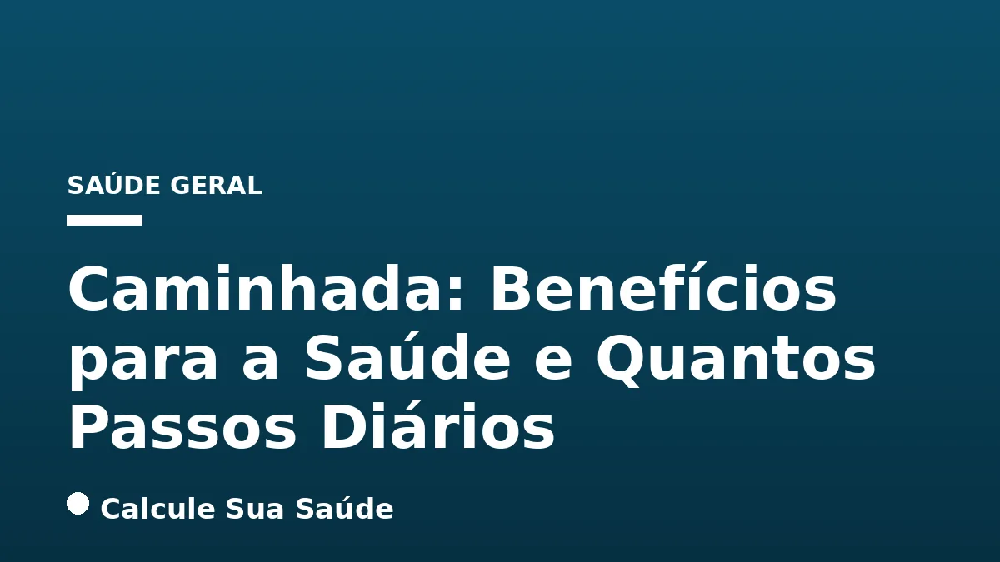

Aviso médico importante
Este conteúdo é educativo e informativo e não substitui a consulta, o diagnóstico ou o tratamento de um profissional de saúde. Em caso de sintomas, procure orientação médica.
Índice do Artigo
- 1. Introdução à Caminhada como Atividade Física
- 2. A Ciência por Trás dos Passos Diários: Desmistificando o Mito dos 10.000
- 3. Benefícios Cardiovasculares e Circulatórios da Caminhada
- 4. Caminhada e o Controle do Peso Corporal
- 5. Impacto na Prevenção e Manejo de Doenças Crônicas
- 6. Fortalecimento Ósseo e Muscular: Prevenção de Osteoporose e Quedas
- 7. Saúde Mental e Cognitiva: Um Aliado Contra o Estresse e o Declínio
- 8. Aumento da Energia, Imunidade e Eficiência Pulmonar
- 9. O Sedentarismo: Um Fator de Risco Silencioso
- 10. Como Iniciar e Manter uma Rotina de Caminhada
- 11. Recomendações de Passos Diários por Faixa Etária
- 12. Integrando a Caminhada no Dia a Dia: Dicas Práticas
- 13. Caminhada como Ferramenta de Prevenção e Tratamento
- 14. Conclusão: Caminhe Rumo a uma Vida Mais Saudável e Longa
- 15. Perguntas frequentes
A caminhada, frequentemente subestimada em sua simplicidade, emerge como uma das intervenções mais poderosas e acessíveis para a promoção da saúde e prevenção de doenças. Reconhecida por organizações de saúde globais como a Organização Mundial da Saúde (OMS), essa forma de atividade física não exige equipamentos caros, habilidades especiais ou ambientes específicos, tornando-a viável para indivíduos de todas as idades e condições físicas. Sua prática regular tem sido associada a uma vasta gama de benefícios, impactando positivamente tanto o bem-estar físico quanto o mental.
No contexto de um estilo de vida cada vez mais sedentário, compreender o papel da caminhada torna-se crucial. Este artigo, baseado em evidências científicas sólidas, visa desmistificar conceitos populares e fornecer informações precisas sobre os benefícios abrangentes da caminhada, bem como as recomendações atuais sobre a quantidade ideal de passos diários para otimizar a saúde. Abordaremos desde a melhoria da saúde cardiovascular e o controle de peso até o fortalecimento ósseo, a saúde mental e a longevidade, sempre com um olhar crítico e científico.
Para além dos benefícios individuais, a caminhada representa uma estratégia de saúde pública de baixo custo e alto impacto, capaz de combater o crescente problema do sedentarismo e suas consequências. Ao longo deste guia aprofundado, exploraremos as recomendações de órgãos de saúde, as causas e riscos associados à inatividade física, e as melhores práticas para integrar a caminhada de forma eficaz e segura em sua rotina diária, contribuindo para uma vida mais ativa e plena.
Em resumo
- A caminhada é uma atividade física aeróbica de intensidade moderada, acessível e eficaz para todas as idades.
- A meta de 10.000 passos diários é um mito de marketing; estudos recentes indicam que 7.000 a 8.000 passos são suficientes para a maioria dos adultos, e 6.000 para idosos, para reduzir o risco de mortalidade.
- Os benefícios da caminhada incluem melhoria cardiovascular, controle de peso, fortalecimento ósseo e muscular, prevenção de doenças crônicas (diabetes tipo 2, alguns cânceres), e saúde mental e cognitiva.
- O sedentarismo é um fator de risco significativo para doenças crônicas e mortalidade, com o Brasil apresentando altos índices de inatividade física.
- Para iniciar, comece gradualmente, mantenha a consistência e adote uma boa postura. Idosos devem incluir exercícios de fortalecimento e equilíbrio.
- A caminhada regular contribui para a longevidade, aumentando a imunidade e a eficiência pulmonar.
1. Introdução à Caminhada como Atividade Física
A atividade física é um pilar fundamental da saúde humana, e a caminhada se destaca como uma de suas formas mais básicas e poderosas. De acordo com a Organização Mundial da Saúde (OMS), atividade física é definida como qualquer movimento corporal produzido pelos músculos esqueléticos que resulta em gasto de energia. A caminhada, quando praticada em um ritmo que acelera a respiração, mas permite a conversação confortável, enquadra-se perfeitamente na categoria de exercício aeróbico de intensidade moderada.
A simplicidade da caminhada é sua maior virtude. Ela não exige academias, equipamentos caros ou habilidades atléticas avançadas. Pode ser realizada em praticamente qualquer lugar – parques, ruas, esteiras – e adaptada às necessidades e capacidades individuais. Essa acessibilidade a torna uma ferramenta inestimável na promoção da saúde pública e na prevenção de uma vasta gama de doenças crônicas não transmissíveis (DCNTs).
As diretrizes da OMS recomendam que adultos pratiquem pelo menos 150 minutos de atividade física de intensidade moderada por semana, ou 75 minutos de atividade de intensidade vigorosa. Essa meta pode ser facilmente alcançada com cerca de 30 minutos de caminhada moderada, cinco vezes por semana. É importante ressaltar que qualquer quantidade de atividade física é melhor do que nenhuma, e o aumento gradual da movimentação diária já traz resultados positivos e mensuráveis para a saúde.
2. A Ciência por Trás dos Passos Diários: Desmistificando o Mito dos 10.000
Por décadas, a meta de 10.000 passos por dia foi amplamente divulgada como o padrão ouro para a manutenção da saúde. No entanto, é crucial entender que essa cifra não se originou de um consenso científico robusto, mas sim de uma campanha de marketing japonesa na década de 1960 para um pedômetro. Embora 10.000 passos sejam certamente benéficos, estudos mais recentes e aprofundados têm refinado essa recomendação, mostrando que benefícios significativos podem ser alcançados com um número menor de passos.
A ciência moderna, baseada em pesquisas epidemiológicas e estudos de coorte, sugere que para a maioria dos adultos, caminhar entre 7.000 e 8.000 passos por dia é suficiente para promover importantes benefícios à saúde, incluindo uma redução notável no risco de mortalidade por todas as causas. Para indivíduos idosos, essa meta pode ser ainda mais flexível, com cerca de 6.000 passos diários sendo eficazes para preservar a saúde e a autonomia, sempre respeitando as limitações individuais.
O mais importante é o movimento e a consistência. Pesquisas indicam que mesmo um aumento modesto na contagem diária de passos, como passar de 2.000 para 4.000 passos por dia, já pode diminuir a mortalidade geral em 36%. Isso demonstra que cada passo conta e que a progressão gradual é um caminho eficaz para melhorar a saúde. A mensagem central é clara: não é preciso atingir uma meta arbitrária para colher os frutos da caminhada; o progresso e a regularidade são os verdadeiros catalisadores da mudança.
3. Benefícios Cardiovasculares e Circulatórios da Caminhada
A saúde do coração e do sistema circulatório é um dos campos onde os benefícios da caminhada são mais evidentes e cientificamente comprovados. A prática regular de exercício aeróbico, como a caminhada, fortalece o músculo cardíaco, melhora a eficiência do bombeamento sanguíneo e otimiza a circulação por todo o corpo.
Prevenção de Doenças Cardíacas e AVC
Caminhar regularmente é uma estratégia eficaz na prevenção de doenças cardiovasculares, incluindo ataques cardíacos e acidentes vasculares cerebrais (AVC). Estudos mostram que caminhar por apenas 21 minutos por dia pode reduzir o risco de ataque cardíaco em até 30%. Isso ocorre porque a atividade física ajuda a manter a elasticidade dos vasos sanguíneos, prevenindo o acúmulo de placas ateroscleróticas, um processo conhecido como aterosclerose.
Controle da Hipertensão e Colesterol
A caminhada contribui significativamente para a regulação da pressão arterial, sendo uma ferramenta não farmacológica importante no manejo da hipertensão. Além disso, ela impacta positivamente o perfil lipídico, ajudando a reduzir os níveis de colesterol LDL (o "colesterol ruim") e triglicerídeos, enquanto aumenta o colesterol HDL (o "colesterol bom"). Para mais informações sobre o manejo do colesterol, consulte nosso artigo sobre Colesterol e Triglicerídeos: Guia Completo.
4. Caminhada e o Controle do Peso Corporal
Manter um peso saudável é fundamental para a prevenção de inúmeras condições de saúde, e a caminhada desempenha um papel crucial nesse aspecto. Como uma atividade que queima calorias, a caminhada contribui para o balanço energético, auxiliando tanto na manutenção do peso quanto na perda de peso, quando combinada com uma dieta equilibrada.
A intensidade e a duração da caminhada influenciam diretamente o gasto calórico. Caminhadas mais longas ou em ritmo mais acelerado naturalmente queimam mais calorias. Além disso, a atividade física regular ajuda a aumentar o metabolismo basal, o que significa que o corpo continua a queimar calorias em repouso de forma mais eficiente. A caminhada também pode ajudar a preservar a massa muscular durante a perda de peso, o que é vital, pois o músculo queima mais calorias do que a gordura.
É importante lembrar que a perda de peso sustentável é um processo gradual. A consistência na prática da caminhada, mesmo em sessões mais curtas, acumula-se ao longo do tempo, gerando resultados significativos. Integrar a caminhada à rotina diária, como ir a pé para o trabalho ou fazer pausas ativas, pode fazer uma grande diferença no controle do peso a longo prazo.
5. Impacto na Prevenção e Manejo de Doenças Crônicas
Além dos benefícios cardiovasculares e de peso, a caminhada regular é uma poderosa aliada na prevenção e no manejo de diversas doenças crônicas que afetam milhões de pessoas globalmente. Sua capacidade de modular processos metabólicos e inflamatórios a torna uma intervenção de saúde pública de alto valor.
Diabetes Tipo 2
A atividade física, incluindo a caminhada, melhora a sensibilidade à insulina, o hormônio responsável por transportar a glicose do sangue para as células. Isso é crucial para a prevenção e o controle do diabetes tipo 2. A caminhada regular ajuda a reduzir os níveis de açúcar no sangue, diminuindo a necessidade de medicação em alguns casos e prevenindo complicações associadas à doença.
Câncer
Estudos epidemiológicos têm demonstrado uma associação entre a atividade física regular e um risco reduzido de desenvolver certos tipos de câncer, como o de mama, cólon e ovário. Embora os mecanismos exatos ainda estejam sendo investigados, acredita-se que a caminhada contribua para a prevenção do câncer através da manutenção de um peso saudável, da regulação hormonal, da melhoria da função imunológica e da redução da inflamação crônica no corpo.
6. Fortalecimento Ósseo e Muscular: Prevenção de Osteoporose e Quedas
A caminhada é uma atividade de sustentação de peso, o que significa que ela impõe uma carga sobre os ossos e músculos, estimulando seu fortalecimento. Esse aspecto é particularmente importante para a saúde óssea e para a prevenção de condições como a osteoporose, uma doença que torna os ossos frágeis e mais suscetíveis a fraturas.
Ao caminhar, os músculos das pernas, glúteos e core são ativados, o que não só os fortalece, mas também melhora a função física geral, o equilíbrio e a coordenação. Em idosos, a melhoria do equilíbrio e da coordenação é vital para reduzir o risco de quedas, que podem ter consequências graves, incluindo fraturas e perda de autonomia. A inclusão de exercícios de fortalecimento muscular e atividades para melhorar o equilíbrio, além da caminhada aeróbica, é recomendada para adultos com 65 anos ou mais, conforme o Ministério da Saúde.
Para saber mais sobre a saúde óssea, você pode consultar nosso artigo sobre Artrose (Osteoartrite): Causas, Sintomas e Manejo Completo, que aborda a saúde das articulações e ossos.
7. Saúde Mental e Cognitiva: Um Aliado Contra o Estresse e o Declínio
Os benefícios da caminhada se estendem muito além do físico, impactando profundamente a saúde mental e cognitiva. A atividade física é um potente modulador do humor e um redutor natural do estresse, ansiedade e sintomas de depressão.
Melhora do Humor e Redução do Estresse
Durante a caminhada, o corpo libera endorfinas, neurotransmissores que atuam como analgésicos naturais e elevadores do humor, gerando uma sensação de bem-estar. Além disso, a prática regular de atividade física ajuda a regular os níveis de cortisol, o hormônio do estresse, contribuindo para uma maior resiliência emocional. Para técnicas mais aprofundadas de manejo do estresse, veja nosso artigo sobre Estresse: Técnicas Baseadas em Evidências para Lidar.
Benefícios Cognitivos e Prevenção da Demência
A caminhada também tem um impacto positivo significativo nas funções cognitivas, como o pensamento, a memória e a capacidade de concentração. Estudos sugerem que a atividade física regular pode retardar o declínio cognitivo associado ao envelhecimento e diminuir o risco de desenvolver demência, incluindo a doença de Alzheimer. Isso se deve, em parte, à melhoria do fluxo sanguíneo para o cérebro e ao estímulo à neurogênese (formação de novos neurônios).
Para aqueles que enfrentam desafios de saúde mental, a caminhada pode ser uma parte valiosa de um plano de tratamento abrangente, complementando outras terapias. Consulte nosso artigo sobre Depressão: Sintomas, Causas, Tipos e Tratamentos para mais informações sobre a saúde mental.
8. Aumento da Energia, Imunidade e Eficiência Pulmonar
A caminhada regular não apenas fortalece o corpo, mas também otimiza suas funções internas, resultando em um aumento geral da vitalidade e da capacidade de defesa contra doenças. Muitas pessoas relatam sentir-se mais energizadas e com maior disposição para as tarefas diárias após incorporar a caminhada em suas rotinas.
A prática contínua da caminhada impulsiona os níveis de energia ao melhorar a eficiência com que o corpo utiliza o oxigênio e os nutrientes. Isso se traduz em maior resistência e um melhor condicionamento físico geral. O sistema cardiovascular e respiratório se tornam mais eficientes, permitindo que o corpo realize atividades com menos esforço e fadiga.
Além disso, a caminhada tem um efeito positivo no sistema imunológico. A atividade física moderada e regular pode aumentar a circulação de células imunes, tornando o organismo mais apto a combater infecções. A melhoria da circulação sanguínea e da respiração também torna os pulmões mais eficientes nas trocas gasosas, otimizando a oxigenação de todos os tecidos do corpo.
9. O Sedentarismo: Um Fator de Risco Silencioso
Em contraste com os múltiplos benefícios da caminhada, a inatividade física, ou sedentarismo, representa um dos maiores desafios de saúde pública da atualidade. É um fator de risco independente e significativo para a mortalidade global, contribuindo para o desenvolvimento de uma série de doenças crônicas não transmissíveis (DCNTs).
Consequências do Sedentarismo
Pessoas insuficientemente ativas têm um risco de morte 20% a 30% maior em comparação com pessoas ativas. O sedentarismo está intrinsecamente ligado ao desenvolvimento de doenças cardiovasculares, como infarto do miocárdio e acidente vascular cerebral (AVC), diabetes tipo 2, alguns tipos de câncer (mama, cólon) e depressão. Além disso, contribui para a obesidade e alterações desfavoráveis no perfil lipídico, como o aumento do colesterol ruim e triglicerídeos.
| Consequência do Sedentarismo | Doenças Associadas |
|---|---|
| Aumento do Risco de Mortalidade | Doenças Cardiovasculares, Câncer, Diabetes Tipo 2 |
| Doenças Cardiovasculares | Infarto do Miocárdio, Acidente Vascular Cerebral (AVC), Hipertensão |
| Distúrbios Metabólicos | Diabetes Tipo 2, Obesidade, Dislipidemia (alterações no colesterol/triglicerídeos) |
| Saúde Óssea e Muscular | Perda de massa óssea, Fraqueza muscular, Risco de quedas |
| Saúde Mental | Depressão, Ansiedade |
| Alguns Tipos de Câncer | Mama, Cólon, Ovário |
Dados Epidemiológicos no Brasil
O Brasil enfrenta um cenário preocupante em relação à inatividade física. De acordo com a OMS, enquanto a média mundial de adultos que não atingem o mínimo recomendado de atividade física é de 31%, no Brasil esse indicador varia entre 40% e 49% (ou 46-47% em outras fontes). Uma pesquisa revelou que apenas 26% dos brasileiros seguem a recomendação da OMS de dedicar pelo menos 150 minutos por semana a atividades físicas no tempo livre, com cerca de 60% dos participantes classificados como inativos.
Apesar desses desafios, a caminhada é a atividade física mais praticada pelos brasileiros. Dados da Pesquisa de Vigilância de Fatores de Risco e Proteção para Doenças Crônicas por Inquérito Telefônico (Vigitel), do Ministério da Saúde, indicam que 36,2% dos entrevistados com mais de 18 anos caminham pelo menos 150 minutos por semana em seu tempo livre. Isso ressalta o potencial da caminhada como uma estratégia eficaz para combater o sedentarismo e melhorar a saúde da população.
10. Como Iniciar e Manter uma Rotina de Caminhada
Iniciar uma rotina de caminhada é um passo fundamental para uma vida mais saudável. A chave para o sucesso é a progressão gradual e a consistência. É importante lembrar que a caminhada é uma jornada, não uma corrida.
Primeiros Passos e Orientação Médica
Para quem está começando ou retorna à atividade física após um período de inatividade, é recomendado iniciar devagar, com caminhadas leves e curtas. Aumente progressivamente a duração e a intensidade à medida que seu corpo se adapta. Antes de iniciar qualquer novo programa de exercícios, especialmente se você tiver condições de saúde preexistentes ou estiver acima dos 65 anos, procure orientação médica. Um profissional de saúde pode avaliar sua condição e fornecer recomendações personalizadas para garantir que a caminhada seja segura e eficaz para você.
Consistência e Técnica Adequada
A consistência é o fator mais importante. Mesmo pequenas quantidades de atividade física diária são mais benéficas do que sessões esporádicas e intensas. Tente incorporar a caminhada em sua rotina diária, seja indo a pé para o trabalho, usando as escadas em vez do elevador, ou fazendo uma caminhada curta após as refeições. Manter uma boa postura é crucial para otimizar os benefícios e prevenir lesões: mantenha a cabeça erguida, o olhar para frente, o pescoço e os ombros relaxados, e os braços balançando livremente ao lado do corpo.
Recomendações Específicas para Idosos
Para adultos com 65 anos ou mais, além da meta de 150 minutos de caminhada aeróbica moderada por semana, é fundamental incluir exercícios de fortalecimento muscular em pelo menos dois dias da semana. Atividades que melhoram o equilíbrio também são essenciais para preservar a autonomia e reduzir o risco de quedas, uma preocupação comum nessa faixa etária. Exemplos incluem tai chi, yoga ou exercícios específicos de equilíbrio supervisionados.
11. Recomendações de Passos Diários por Faixa Etária
A meta de passos diários ideal pode variar ligeiramente dependendo da idade e do nível de condicionamento físico. Embora o mito dos 10.000 passos tenha sido amplamente difundido, a ciência atual oferece diretrizes mais flexíveis e baseadas em evidências para diferentes grupos demográficos.
| Faixa Etária | Passos Diários Recomendados | Benefícios Principais |
|---|---|---|
| Adultos (18-64 anos) | 7.000 a 8.000 passos | Redução do risco de mortalidade por todas as causas, saúde cardiovascular, controle de peso. |
| Idosos (65+ anos) | Cerca de 6.000 passos | Preservação da autonomia, redução do risco de quedas, fortalecimento ósseo e muscular. |
| Qualquer Idade (Iniciantes/Sedentários) | Aumento gradual a partir de 2.000-4.000 passos | Diminuição da mortalidade geral em 36% (ao passar de 2.000 para 4.000 passos), melhoria inicial da disposição e saúde. |
É importante enfatizar que esses números são metas e não limites rígidos. O mais importante é o movimento e a consistência. Mesmo que você não consiga atingir a meta ideal todos os dias, qualquer aumento na sua atividade física diária trará benefícios. O foco deve ser em incorporar mais movimento ao seu dia, de forma sustentável e prazerosa.
12. Integrando a Caminhada no Dia a Dia: Dicas Práticas
Tornar a caminhada parte integrante da sua rotina não precisa ser um desafio. Com algumas estratégias simples, é possível aumentar significativamente sua contagem diária de passos sem grandes mudanças na sua agenda.
- Estacione mais longe: Se você usa carro, estacione em vagas mais distantes do seu destino para adicionar alguns minutos de caminhada.
- Use escadas: Opte pelas escadas em vez de elevadores ou escadas rolantes sempre que possível.
- Pausas ativas: Durante o trabalho, faça pequenas pausas para caminhar pelo escritório ou dar uma volta no quarteirão.
- Caminhe para recados: Se o destino for próximo, considere ir a pé em vez de usar transporte.
- Encontros em movimento: Sugira caminhadas com amigos ou familiares em vez de encontros sedentários.
- Passeios com animais de estimação: Se tiver um pet, aproveite para fazer passeios mais longos e frequentes.
- Desça um ponto antes: Se usa transporte público, desça um ou dois pontos antes do seu destino final e complete o trajeto a pé.
- Caminhada pós-refeição: Uma curta caminhada após as refeições pode ajudar na digestão e no controle dos níveis de açúcar no sangue.
- Invista em um pedômetro ou aplicativo: Ferramentas que contam seus passos podem ser ótimos motivadores e ajudar a monitorar seu progresso.
Lembre-se que a chave é encontrar o que funciona melhor para você e tornar a caminhada um hábito prazeroso e sustentável.
13. Caminhada como Ferramenta de Prevenção e Tratamento
A robustez das evidências científicas que apoiam os benefícios da caminhada a posiciona não apenas como uma medida preventiva, mas também como uma ferramenta terapêutica valiosa no manejo de diversas condições de saúde. Organizações como a OMS, o CDC (Centers for Disease Control and Prevention) e a Mayo Clinic consistentemente endossam a caminhada como parte integrante de um estilo de vida saudável.
Para a prevenção, a caminhada regular é uma das estratégias mais eficazes contra o desenvolvimento de doenças cardiovasculares, diabetes tipo 2, obesidade, osteoporose e certos tipos de câncer. Ela atua como um escudo protetor, fortalecendo o corpo e otimizando suas funções metabólicas e imunológicas.
No âmbito do tratamento, a caminhada é frequentemente recomendada como parte de planos de reabilitação cardíaca, programas de controle de peso para indivíduos com obesidade, e como um componente não farmacológico no manejo da hipertensão e do diabetes. Para pessoas com condições como a artrose, caminhadas de baixo impacto podem ajudar a manter a mobilidade e reduzir a dor, fortalecendo os músculos de suporte das articulações.
É fundamental que a inclusão da caminhada como parte de um tratamento seja sempre discutida e supervisionada por profissionais de saúde, que podem adaptar as recomendações às necessidades e limitações específicas de cada paciente. A caminhada é uma medicação sem efeitos colaterais indesejados, acessível e com benefícios comprovados para a longevidade e qualidade de vida.
14. Conclusão: Caminhe Rumo a uma Vida Mais Saudável e Longa
A caminhada é muito mais do que um simples ato de mover-se; é uma intervenção de saúde pública poderosa, acessível e cientificamente comprovada. Desde a melhoria da saúde cardiovascular e o controle do peso até o fortalecimento ósseo, a promoção da saúde mental e a prevenção de doenças crônicas, seus benefícios são abrangentes e impactam positivamente a longevidade e a qualidade de vida.
Desmistificando o popular, mas não cientificamente fundamentado, mito dos 10.000 passos, a ciência atual nos mostra que metas mais realistas e igualmente eficazes, como 7.000 a 8.000 passos para adultos e cerca de 6.000 para idosos, são suficientes para colher vantagens significativas, incluindo a redução do risco de mortalidade. O mais importante é a consistência e o aumento gradual da atividade, pois cada passo adicional contribui para um corpo mais forte e uma mente mais saudável.
Diante dos alarmantes índices de sedentarismo no Brasil e no mundo, a caminhada emerge como uma solução prática e de baixo custo para reverter essa tendência. Ao integrar a caminhada em sua rotina diária, seja por meio de pequenas mudanças de hábito ou de sessões dedicadas, você estará investindo em sua saúde de forma proativa. Lembre-se, este conteúdo é educativo e não substitui a avaliação de um profissional de saúde, que pode oferecer orientações personalizadas. Comece hoje a caminhar rumo a uma vida mais ativa, saudável e plena.
15. Perguntas frequentes
Quantos passos por dia são realmente necessários para a saúde?
Estudos recentes indicam que para a maioria dos adultos, caminhar entre 7.000 e 8.000 passos por dia já proporciona benefícios significativos, incluindo a redução do risco de mortalidade. Para idosos, cerca de 6.000 passos podem ser suficientes, sempre respeitando as limitações individuais.
O mito dos 10.000 passos é verdadeiro?
Não, a meta de 10.000 passos surgiu de uma campanha de marketing japonesa na década de 1960 e não de um consenso científico inicial. Embora benéfica, a ciência atual mostra que menos passos já trazem grandes benefícios à saúde.
Quais são os principais benefícios da caminhada para a saúde cardiovascular?
A caminhada melhora o condicionamento físico e a função cardiovascular, reduzindo o risco de doenças cardíacas, AVC, hipertensão arterial e níveis de colesterol. Caminhar 21 minutos por dia pode reduzir o risco de ataque cardíaco em 30%.
A caminhada ajuda no controle de peso?
Sim, a caminhada queima calorias e contribui para o equilíbrio energético, auxiliando na manutenção de um peso saudável ou na perda de peso quando combinada com uma dieta equilibrada. Ela também ajuda a preservar a massa muscular.
Como a caminhada afeta a saúde mental?
A caminhada melhora o humor, o pensamento, a memória e o sono. Reduz o estresse, a ansiedade e os sintomas de depressão, além de retardar o declínio cognitivo e diminuir o risco de demência, pela liberação de endorfinas e regulação do cortisol.
O sedentarismo é um problema sério no Brasil?
Sim, o Brasil está acima da média mundial de inatividade física, com 40% a 49% dos adultos não atingindo o mínimo recomendado de atividade física. O sedentarismo é um fator de risco significativo para diversas doenças crônicas e mortalidade.
É preciso orientação médica para começar a caminhar?
É recomendado procurar orientação médica antes de iniciar uma rotina de caminhada, especialmente se houver condições de saúde preexistentes ou se for um idoso. Isso garante que a atividade seja segura e adaptada às suas necessidades.
Qual a importância da consistência na caminhada?
A consistência é fundamental. Mesmo pequenas quantidades de atividade física diária trazem benefícios, e o mais importante é estar em movimento regularmente. Aumentar gradualmente a duração e intensidade é mais eficaz do que sessões esporádicas e intensas.
Leia também
Referências e Fontes
1. Organização Mundial da Saúde (OMS). Atividade física. Disponível em: who.int
2. Mayo Clinic. Walking: Trim your waistline, improve your health. Disponível em: vertexaisearch.cloud.google.com
3. Mayo Clinic Press. The health benefits of walking. Disponível em: vertexaisearch.cloud.google.com
4. Ministério da Saúde - Portal Gov.br. Adianta caminhar? Adianta sim! Disponível em: gov.br
5. Painel Brasileiro da Obesidade. Inatividade física: Brasil está acima da média do mundo. Disponível em: painelobesidade.com.br
6. Mayo Clinic Health System. 5 tips to walk for better health. Disponível em: vertexaisearch.cloud.google.com
7. Dra. Ana Paula Simões. Confira 5 benefícios de caminhar regularmente. Disponível em: anapaulasimoes.com.br
8. GNDI. Os Benefícios da Caminhada para a saúde. Disponível em: www2.gndi.com.br
9. Hospital da Luz. Quantos passos dar por dia? Disponível em: hospitaldaluz.pt
10. Tuasaude. Quantos passos por dia são normais para manter a saúde do corpo e a disposição. Disponível em: tuasaude.com